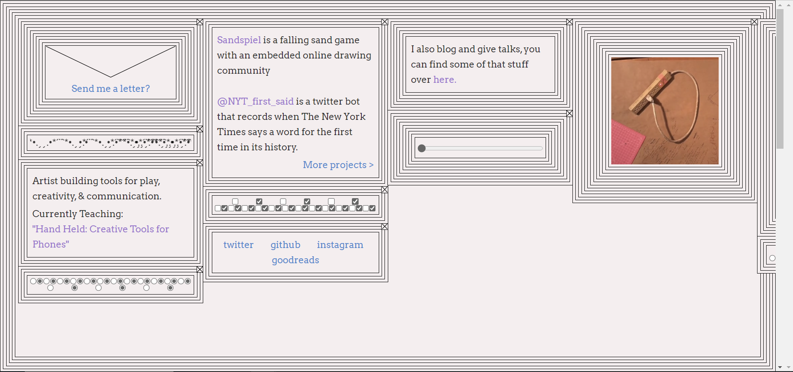

Interactive Experience Research Project
I chose
Max Bittker's site as my interactive web project to research.

-
What was the first thing you paid attention to when interacting with the experience?
The first thing that I paid attention with is the gif image on the right side. This is a very interesting image of a power strip that is plugged into itself but still provides energy. I looked at this image several times over to confirm how long this gif was.
-
Spend two minutes with the experience and create a list of each of your discrete actions.
- Looked at the entire web page and saw the gif image.
- Repeated viewing the image to confirm how long it went.
- I saw there was a draggable button at the centre right of the web page.
- I tried to drag it around and the black border on the web page rounds off as I drag it to the right.
- I found that only the border was changing, the inside text stayed the same.
- Then I paid attention on the top left session, “Send me a letter?”
- The shape of the letter and the text “Send me a letter?” were both clickable.
- After I clicked, it brought me to a different page, the whole screen is black, and the art style became pixel style.
- Then, I pressed Backward button to go back to the home page.
- I found that the home page was reset to the way it was at the beginning.
- The next thing that caught my attention was the row of tick box in the middle of the page.
- All the boxes were interactive, and I ticked all the boxes with my mouse.
- I expected something new to change or pop up after all the clicks, but nothing happened and I felt a little frustrated.
- After that I noticed the cross icon in the top right corner of each border, just like the exit button on browser.
- After I clicked on it, the box I have selected and its contents disappeared.
- Then another border came out, it is an image of a man with his eyes closed.
- I closed a few more borders, an image of a cat came out.
-
What part of the experience did you spend the most time engaging with?
I spent most of my time on this site are the icons or patterns that can be interacted with by clicking on them.
-
What was the most common action in your two minutes interaction with the experience?
Use my left mouse button for clicking and dragging.
-
What is your impression of the intended primary goal of the interactive experience?
This web is the personal website of a man called Max Bittker. I think the intended primary goal of his interactive web is to quickly gets people interested in himself through a number of things that can be interact with.
-
What is your impression of how the interactive experience communicates its primary goal?
This interactive website used many simple interactions, like tick box, exit button, none of them having any special meaning, but will be fun to interact with. This showed Max Bittker, the creator's personal style.
-
What is your impression of how the experience should be interacted with over time? (For how long and how many different times)
This web serves as the homepage of Max Bittker’s personal site, and he does not present too much information directly. In my impression, I think this web will probably be interacted two or three times by the same user, and each visit would not take too long. The first time would be the longest, about 2-3 minutes. After the first time, the interaction time will be less, probably less than a minute each time.
-
What is your impression of how the interactive experience communicates how it should be interacted with over time?
I think the user will be play around those interactive buttons and boxes by clicking or dragging them in the first interaction time. The user then starts reading the text on the site and click those titles to view more information about the creator, Max Bittker. This action will take them to another site, which also means that it will stop the interaction on this site, so user won’t spend too much time on this current web. Each time the user returns to this web, Max’s home page, he should click directly on the next link he wants to visit, so he will not stay on the current site for too long.
-
What other media forms (digital or otherwise) does the experience reference?
This experience references tickbox media form, it is a small square on a paper form where you can put a tick to show that you agree with something or need something.
This draggable bar can references the volume bar on the laptop, by dragging the round button, we can freely adjust the volume.
-
What does this reference or references suggest to you about how you should act when engaging with it?
These references helped me to take the same actions as I normally would when I came across them. For example, when I see the tickbox I will simply use my mouse to click on it and I can guess what changes it will make as a result of my action.
-
What does this reference or references suggest to you about how you should feel when engaging with it?
I think it should feel relaxed and natural when interacting with it, like something you would always come into contact with in everyday life.
-
What is the most frustrating element of the interaction to you and what makes it frustrating?
I think the most frustating element is the layout of this web. When I visiting with full screen on google chrome using my laptop, the layout of this website was incorrect in my opinion. There were many blank spaces on the site when I screwed down with my mouse. However, if I visited this web with my phone, the layout was perfect adjusted. I think I should get the same experience no matter what device I use to access.
-
What is the most satisfying element of the interaction to you and what makes it satisfying?
The most satisfying element of this web is it offers a lot of places to interact, and the interaction is all very easy to understand, with just a click of the mouse.I enjoyed seeing the results of each interaction.